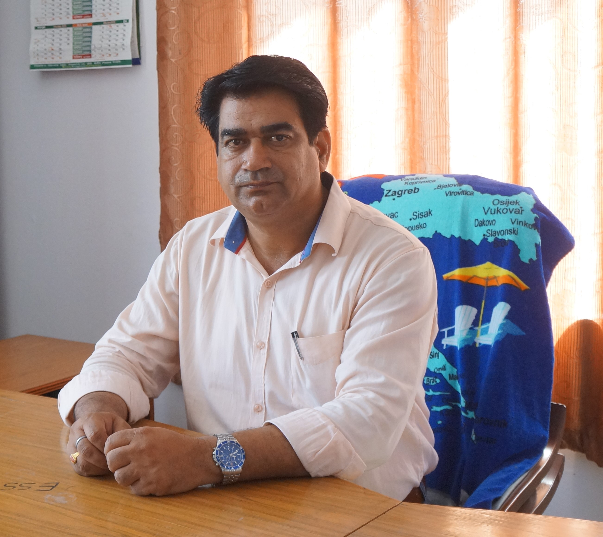

|
|
Message from Director

NTC is not only a rest of Technical institution bbut
it is also a dream collage for entire team.A unique
combination of almost an impossible set of teachers,academic
environment and atute managers with decades of experience in
field along eith national class infrastructure has streamlined
NTC in the present from.in a dedicated and deserving student gets
enrolled here ,his/her dream is bound to be changed in to reality .
i would like to say gurdaians and students to pay a visit to the
collagae and to gudge whether the collage in real is what it claims.
it is pleasure to welcome you all here.
Voice of principal
Dear students
I take this opportunity to welcome you on behalf of the entire nepalgunj Technical Collage family. All of us are very happy and excited to received you as new members of this family as you embark on this academic journey that will define your career in the years a head. I extend my good wishes and blessings to you. I understand and appreciate that you come from different geographical, social, cultural, economic and religious backgrounds. I assure you that faculty, administrative and support staff will help you in getting integrated in NTC family and will provide you the needed support and guidance, I hope that you will fit in this family and related well with other members of the family as you pursue you career.
{kind=link}
{kind=link}